download
eco section
Milieu en omgeving
Het koelwater van de reactor wordt op de site bewaard in grote watertanks. Een deel van het radioactieve water bevindt zich in de kelders en de laagst gelegen delen van de reactor. Daar vermengt het zich met grondwater, en een deel van het besmette grondwater vloeit terug naar zee. Dit radioactieve water wordt van dichtbij gemonitord. Eens voorbij de kustlijn van Fukushima, is het in die mate verdund dat het geen gevaar meer vormt voor mens en milieu.
Millisievert
De sievert is de eenheid voor de equivalente dosis ioniserende straling waaraan een mens in een bepaalde periode is blootgesteld. De sievert is afhankelijk van de biologische effecten van straling. Het Belgische Federale Agentschap voor Nucleaire Controle schat de gemiddelde natuurlijke achtergrondstraling voor België in op 2,5 millisievert/jaar. Enkele voorbeelden van dosissen geven een idee van de grootorde:
hero header
Fukushima: de feiten
how section
Hoe kon het ongeval gebeuren?
De centrale van Fukushima-Daiichi bestaat uit zes reactoren aan de oostkust van Japan, in een seismisch actief gebied. Op vrijdag 11 maart 2011 deed zich een zeebeving voor van 9.0 op de schaal van Richter. Het is één van de zwaarste aardbevingen die het land ooit trof.
De aardbeving zette de automatische noodstop in werking, waardoor alle kerncentrales in de regio automatisch stilvielen. Na een stop duurt het nog enkele dagen voor een centrale volledig tot stilstand komt. Ondertussen werd de reactor (die nog warmte produceert) afgekoeld met water, dat uit zee wordt opgepompt.
lees meerimpact section
Wat was de impact ?
gezondheid
- Er werd bij geen enkele werknemer stralingsziekte vastgesteld.
- Een rapport van de Verenigde Naties uit 2014 concludeerde dat de mogelijke toename van kanker in Japan te klein is om in de toekomst met epidemiologische studies te kunnen aantonen.
- Volgens UNSCEAR zijn meer dan 50 patiënten, voornamelijk oudere mensen, tijdens of kort na de gedwongen evacuatie gestorven.
Het rapport van de Verenigde Naties is ondubbelzinnig: er werden geen merkbare effecten vastgesteld op de gezondheid van de mensen die in contact kwamen met de radioactieve straling, en dit valt wellicht ook niet aan te tonen op lange termijn. De uitleg daarvoor (rapport Verenigde Naties) is als volgt:
- Door een snelle evacuatie van 160 000 mensen en het feit dat de ontploffingen van de reactoren zich pas een tot na vier dagen voordeden, werden nauwelijks mensen blootgesteld aan hoge stralingsdosissen.
- De gezondheidstoestand van de werknemers die na de ramp op de site aan het werk waren wordt van dichtbij opgevolgd. Eén van de zes werknemers die een dosis hoger dan 250 millisievert opliep stierf ondertussen aan de gevolgen van kanker.
Lees hier het volledige rapport van de Verenigde Naties.
info block
Millisievert
De sievert is de eenheid voor de equivalente dosis ioniserende straling waaraan een mens in een bepaalde periode is blootgesteld. De sievert is afhankelijk van de biologische effecten van straling. Het Belgische Federale Agentschap voor Nucleaire Controle schat de gemiddelde natuurlijke achtergrondstraling voor België in op 2,5 millisievert/jaar. Enkele voorbeelden van dosissen geven een idee van de grootorde:
intro section
Veiligheid is de absolute prioriteit van de nucleaire sector. Kerncentrales, onderzoeksreactoren, laboratoria voor nucleaire geneeskunde en andere nucleaire installaties behoren tot de meest beveiligde en best gecontroleerde industriële installaties. De Belgische kerncentrales behoren tot de meest robuuste en veiligste in hun soort, aldus de Europese Commissie.
De doorgedreven veiligheidscultuur van de sector heeft niet kunnen verhinderen dat er zich in de nucleaire sector twee ernstige ongevallen hebben voorgedaan: Tsjernobyl (Oekraïne) en Fukushima (Japan). Wegens een aantal fundamentele verschillen kan een ongeval zoals in Fukushima in ons land niet gebeuren. Dat blijkt ook uit de resultaten van de stress tests die door de Europese Commissie werden opgelegd aan alle nucleaire installaties in Europa: België ligt niet op een seismisch actieve plaat, Belgische kerncentrales zijn volgens een ander (veiliger) ontwerp gebouwd (onder andere met een dubbele mantel), en er heerst een strikte controle- en veiligheidscultuur in ons land.
Wat liep er precies mis in Fukushima en waarom? Hoeveel mensen kwamen er om door de tsunami, en hoeveel door de kernramp? En waarom kan een ongeval zoals in Japan bij ons niet gebeuren? Op deze pagina vindt u een antwoord op de meest gestelde vragen.